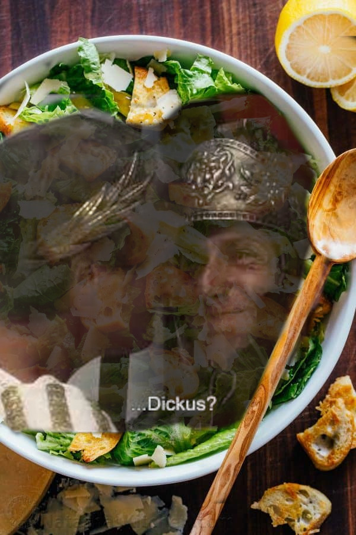

Caesar Salad
yummmmmmmmmmmm

Ingredients
-
1 large or 2 small heads of romaine lettuce
-
Parmesan cheese, shredded or shaved
-
Crisp croutons homemade can be made several days ahead. The recipe below makes enough for 2 salads.
-
Caesar salad dressing homemade is best and here is our favorite store-bought dressing in a pinch
Making the Croutons
-
Cut baguette in half lengthwise and slice into 1/4″ thick pieces and place on baking sheet.
-
Combine 3 Tbsp extra virgin olive oil with minced garlic. toss breads with garlic infused oil and 2 Tbsp parmesan.
-
Spread Evenly and Bake to desired crispness.
Making the Salad Dressing
-
Whisk together minced garlic, dijon, Worcestershire, lemon juice and red wine vinegar.
-
Whisking while adding oil emulsifies the dressing for a smooth and creamy (not oily) consistency.
-
Season with 1/2 tsp salt and 1/8 tsp black pepper, or to taste.
Making the Salad!
Toss ingredients in bowl together, making sure to liberally coat salad and croutons
in that gross ass dressing ew, whats the point of having delicious salad just to
coat that shit in fat? Just use balsamic vinegar.
Eat it if you can, I guess.